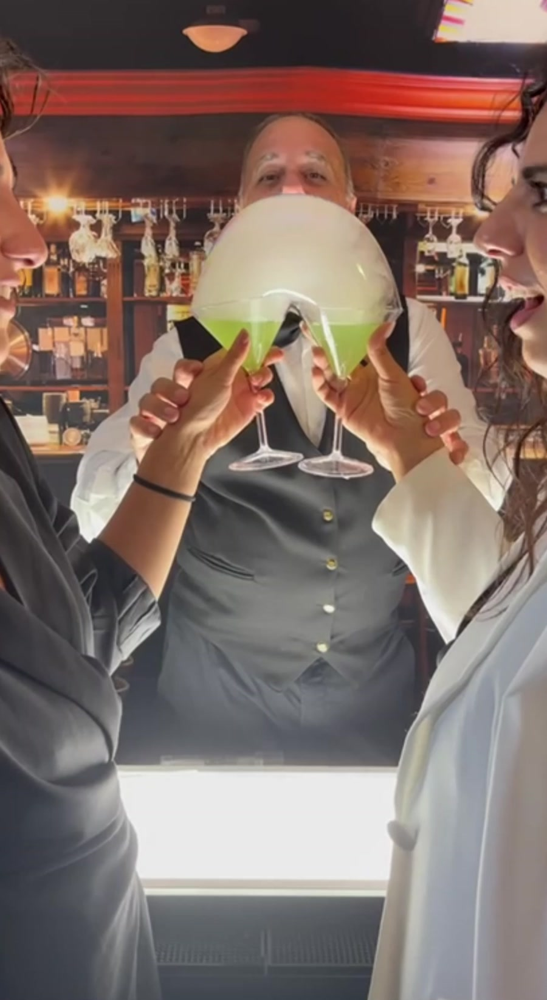

The Bubble Bar · Wedding entertainment
A bar that serves wonder.
A striking installation where guests choose a bubble creation and watch it come to life.
Based in Rome · Available throughout Italy · Paolo Musetti

The experience
The Bubble Bar
Paolo creates bubbles in front of guests, adding a shared experience to the reception.
The Bubble Menu can be coordinated with the couple’s names, wedding date and style.
The setup is agreed with the planner and venue.
For your wedding
A moment planned with care.
Share the date, venue and guest count to discuss the right format for your wedding.
Check the date on WhatsApp